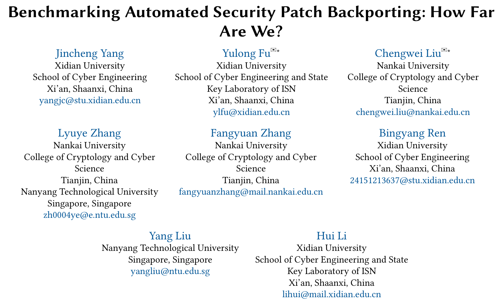
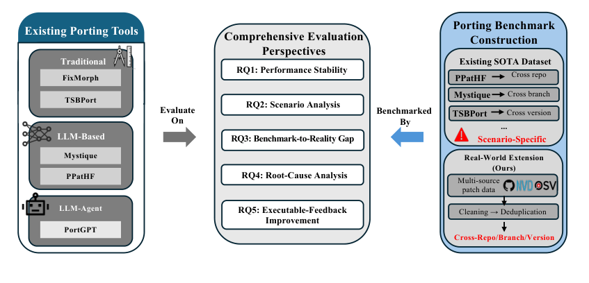
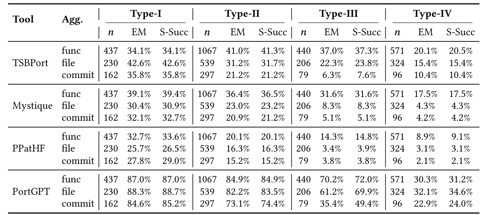
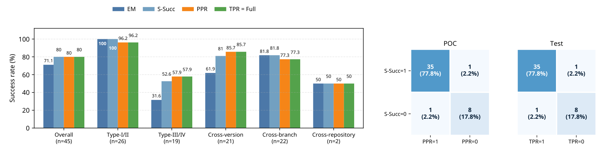

本文看点
01
1234例补丁回移基准
02
跨调用链改动是死穴
03
难补丁成功率跌到24%
01
PAPER INFO
论文信息
【论文题目】Benchmarking Automated Security Patch Backporting: How Far Are We?
【论文链接】https://arxiv.org/abs/2608.17671
【作者团队】西安电子科技大学、南开大学、南洋理工大学

— 论文题头
这是一篇发表在软件工程顶会 ASE 2026 的基准（benchmark）论文，作者来自西电、南开、NTU。它给"自动补丁回移"这个方向做了一次公平的横向摸底，标题的问句"How Far Are We"（我们到底走到哪一步了），答案有点扎心。因为是基准类论文，本文重点讲清这个基准怎么建、以及它考出了什么反直觉的结论。
02
OVERVIEW
导读
先说清楚什么是补丁回移（patch backporting）：一个漏洞在软件主线版本修好后，这个修复还得传到仍在维护的老版本、LTS 长期支持分支、以及下游的各种分叉（比如各家基于 Linux 内核改的系统）。光 Linux 内核就同时维护着几十个活跃分支。这一步很关键，它是 Nday 漏洞防护的命脉：修复明明存在，但只要没传到某个下游分叉，那个分叉就一直暴露在已知漏洞下。手工回移又慢又容易出错，于是自动化工具成了热门方向。
问题是，现有工具（传统程序分析的 FixMorph、TSBPort，大模型提示的 Mystique、PPatHF，大模型 Agent 的 PortGPT）各家都号称 42% 到 95% 的成功率，但每家都在自己的数据集、用自己的成功标准自测，根本没法横向比。这篇论文建了一个统一基准 Porting Benchmark（1234 个真实回移案例），把 5 个工具拉到同一张考卷上考，结论很不客气：对齐评测后，那些漂亮的成功率集体跳水。
03
WHY
为什么现有的"成功率"不可信
作者先点破现有评测的四个硬伤，这也是这个基准要解决的问题：
- 可比性硬伤：每个工具用不同的指标（有的看能不能编译通过，有的看和参考补丁的编辑距离），标准不一，数字没法比。
- 泛化硬伤：每个工具只在自己针对的场景上测过（比如 FixMorph 只测 Linux 跨版本），换个场景行不行没人知道。
- 覆盖硬伤：数据集集中在少数简单场景，容易把成绩刷高。
- 失败解释硬伤：只报成功率，从不系统分析"为什么失败、缺了什么能力"。
Porting Benchmark 的破法，是把回移案例按两个正交维度摊开：一个是跨场景（跨版本、跨分支、跨分叉），一个是改动复杂度（Type-I 完全一样、Type-II 只改位置、Type-III 语法适配、Type-IV 结构性改动）。再用一套统一的五级验证标准，加上真实的 POC 和测试用例来做可执行验证。这样就能公平地问：同一个工具，遇到不同难度、不同场景的补丁，到底行不行。
04
BUILD
基准怎么建：把工具拉到同一张考卷

— 图1：统一基准的评测框架。左边是被考的 5 个工具，按范式分成传统程序分析、大模型提示、大模型 Agent 三类；中间是五个研究问题（性能稳定性、场景分析、基准与现实的差距、根因分析、可执行反馈）；右边是基准构建，指出现有工具的数据集都是"场景专用"的，而这个基准从 NVD、OSV 等多源补丁数据里清洗去重，覆盖跨分叉、跨分支、跨版本三种场景
几个构建细节体现了它的严谨：数据全部取自 2023 年之后，专门避开大模型的训练截止日，防止工具是"背过答案"而不是真会做；1234 例分成复现集和评测集，评测集覆盖 192 个 CVE、80 个目标仓库；标注由两位有五年以上经验的安全研究者独立做，一致性（Cohen's kappa）在场景和类型上分别达到 1.0 和 0.97。更关键的是它不只看"补丁长得像不像参考答案"，还挑出 45 个能真跑的案例，用真实 POC 去验证"打了这个补丁，漏洞到底还能不能被触发"。
05
RESULTS
考出了什么：越复杂越崩，而且静态分数会骗人
结论一，对齐一考，成绩集体跳水。 在复现集上，只有 PortGPT（Agent）和 TSBPort（程序分析）还能顶住（80.5%、75.8%），而其它工具大幅缩水：Mystique 从自报的 92.4% 掉到 14.7%，FixMorph 从 75.1% 掉到 28.1%。各家论文里那些漂亮数字，一到统一标准下就露了底。
结论二，也是最核心的反直觉发现：真正的墙是"结构复杂度"，不是场景。 看这张表：

— 表1：4 个工具在四种改动复杂度上的静态端到端成功率（EM 精确匹配、S-Succ 语义成功）。看每个工具最下面的 commit 行：从 Type-I 到 Type-IV，成功率一路崩塌。最强的 PortGPT 在 Type-I（完全一样的补丁）能到 85.2%，到 Type-IV（结构性改动）只剩 24.0%；其它工具在 Type-IV 上普遍跌到个位数
规律非常干净：连最强的工具，遇到需要结构性改动的补丁，成功率也从 85% 崩到 24%。补丁越是"照抄就行"，工具表现越好；越是需要真正理解代码、做结构性适配，工具越无能为力。而跨版本场景之所以最难，正是因为它含的 Type-III/IV 复杂补丁最多。
结论三，静态分数会两头骗人。 作者用 45 个能真跑的案例做了个"照妖镜"实验，发现"补丁长得像参考答案"和"补丁真能挡住漏洞"是两回事，而且两个方向都会错：一方面，有些补丁做了合理的适配、和参考答案文字上对不上，被精确匹配误判成失败，其实功能是对的；另一方面，有些补丁静态上对得上，真跑起来却编译不过、或挡不住 POC。下面这张图右边的失配矩阵显示，45 个案例里就有两个在这两个方向上打架。这提醒所有做检测评测的人：只用"和参考答案的相似度"当分数，会同时低估和高估工具的真实能力。

— 图2：45 个可执行案例上，静态分数与真跑结果的对照。左图按分组看四个指标（EM 精确匹配、S-Succ 语义成功、PPR 能否挡住 POC、TPR 测试是否全过）：Type-I/II 的简单补丁四项都接近满分，Type-III/IV 的复杂补丁 EM 只有 31.6%，可实跑指标有 57.9%，静态匹配明显低估了工具；右图是案例级失配矩阵，POC 侧和测试侧各有 1 例静态判成功却实跑失败、1 例静态判失败却实跑通过
结论四，失败到底缺什么能力（这是最有价值的部分）。 作者逐个分析了 Type-III/IV 的失败案例，归成四类根因，其中两类占了绝大多数：F4 补丁构造或定位失败（45%），也就是补丁生成得空的、畸形的、放错了位置；F3 非局部依赖传播失败（39%），补丁需要跨多个函数、多个文件协同改动，工具却只补了一处。论文举的 io_uring 例子很典型：正确修复需要把一个参数穿过一条四层函数的调用链、改动 8 处实现侧代码，而工具只生成了 2 处位于错误位置的头文件改动，剩下的全漏了。相比之下，F1（不认识目标里的 API，8.3%）、F2（跨版本语义错配，6.7%）少见得多，但 F2 尤其阴险：补丁能编译通过，却是功能错的，靠编译验证根本抓不出来。
结论五，可执行反馈能救回一点，但不是灵药。 作者试了把 POC、测试、编译的失败信息喂回给工具做迭代修复，结果最强的 PortGPT 在 45 个可执行案例上，完整通过数从 36 个提升到 37 个（+2.2 个百分点）。有效，但对结构性失败这种硬骨头，提升很有限。
06
TAKEAWAYS
启发与点评
对研究者：这篇基准的价值有三层。其一，它把"自动补丁回移"从各说各话的自测，拉到了一个可比、可复现、还带真实 POC 验证的统一考场，这本身就是这个方向急需的基础设施。其二，它考出的核心结论很有指导性：真正卡住自动化的不是"跨不跨版本"这种表面场景，而是补丁要不要做结构性、跨调用链的改动；换句话说，这个方向的下一个突破口，是让工具学会"把一个修复的意图铺展到整条调用链上"，而不是继续在简单补丁上刷分。其三，它的方法论也有普适警示：用"和参考答案的相似度"当评测分数会两头失真，而编译能过不等于功能对（F2 那类语义错配），做任何代码生成/修复的评测都该配上可执行验证，否则分数是虚的。
对从业者：两个能立刻用的判断。其一，别信"我们工具成功率 90%+"这种笼统说法：先问它是在什么改动类型、什么场景上测的，简单补丁能到九成、结构复杂的补丁可能只有两成，平均数会骗人。其二，结构复杂的跨版本回移，现在还离不开人：对你自己维护的下游分叉、LTS 分支，凡是涉及跨函数、跨文件协同改动的安全补丁，别指望自动化一键搞定，人工复核这一关还省不掉。
一点观察：把这篇放进供应链安全的大图里看，它量化了一个我们一直知道、却缺乏数据支撑的痛点：漏洞的修复补丁往往是存在的，真正的风险在于它传不到所有下游分叉。一个 Nday 漏洞之所以能长期为祸，常常不是没人修，而是修复卡在了"回移到千千万万个分叉"这一步，尤其是那些需要结构性适配的硬补丁。这篇基准诚实地告诉我们：指望自动化工具去补齐这条"最后一公里"，目前还只能覆盖简单的那一半。补丁的分发与回移，是软件供应链里一条又关键又薄弱的战线，而这篇给出了它的第一张体检报告。